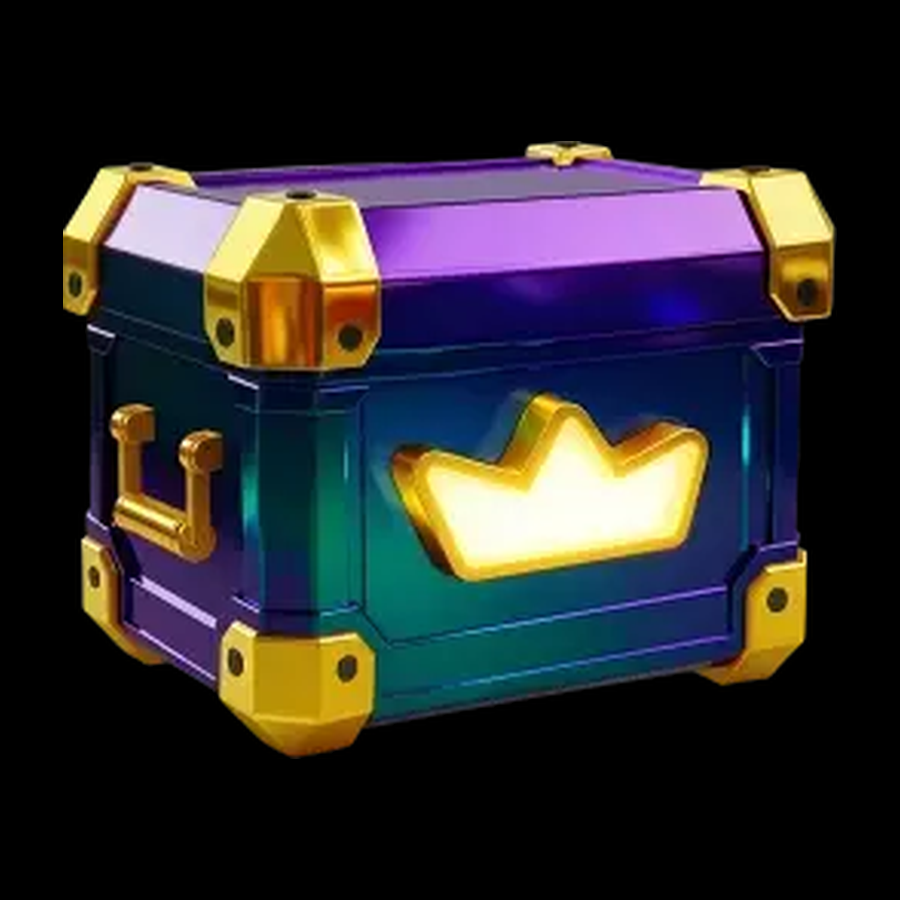
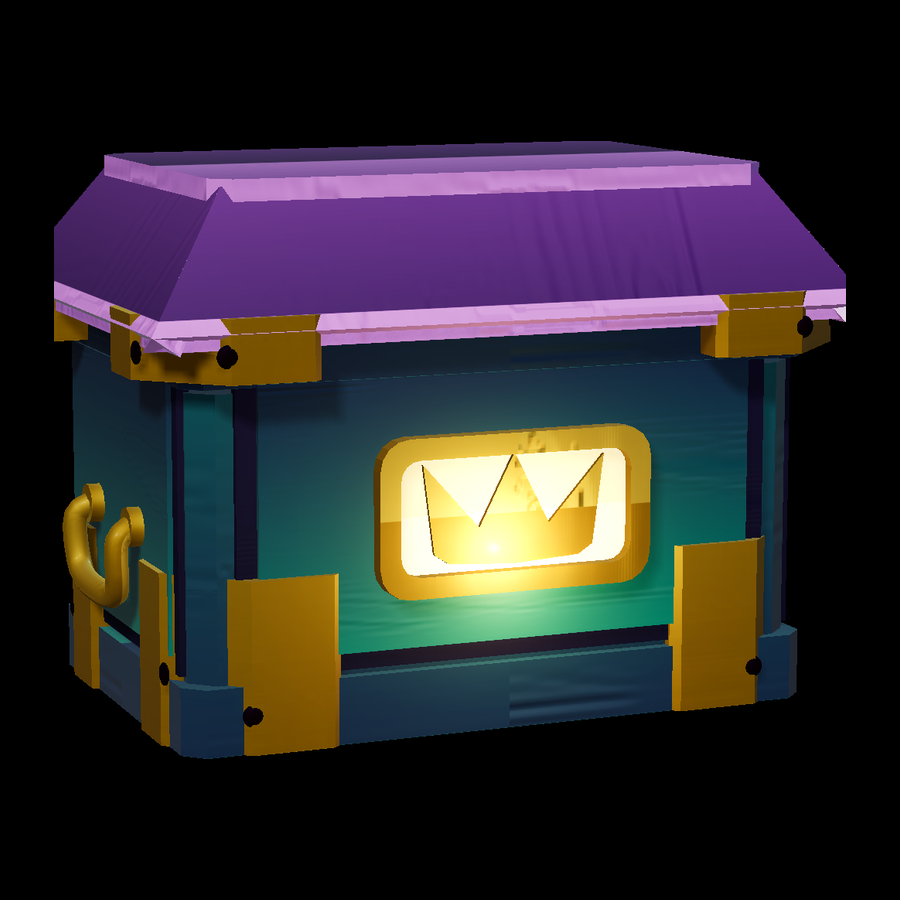

Reference Procedural result

The wipe uses a subject-bbox alignment of both frames so the silhouettes can be read directly; the pair below is untouched. Tier-1 diagnosis on the hero view: silhouette IoU 0.9060, aspect-ratio delta 0.0090, scale delta 0.0090, bilateral symmetry error 0.0740.
The GLB is a single-material triangle soup produced by TRELLIS from the same reference image; it is height-matched and floor-aligned to the procedural model so the two silhouettes can be read against each other. It is a render baseline only — no geometry, topology or material from it is used by the procedural build.